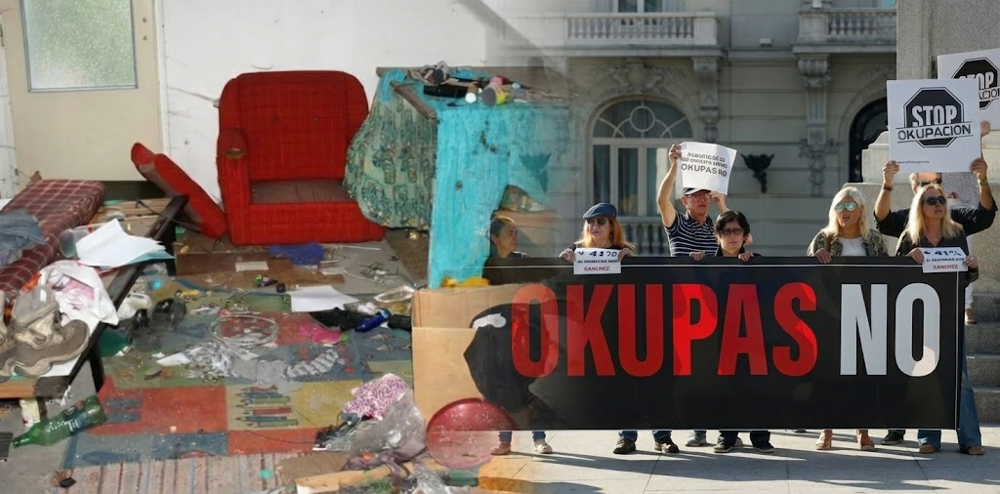

Check your stress levels quickly and easily, and restore your mental wellbeing.
Please answer honestly, just as you normally think.
Please answer honestly, just as you normally think.
Please answer honestly, just as you normally think.
Okupa :People, illegally occupying empty homes.
Please answer honestly, just as you normally think.
There is no right or wrong answer.
For an accurate stress index, we will measure your heart rate.
Please cover the front camera completely with your fingertip.
Breathe in and out comfortably.
Gently cover the camera with your fingertip and stay still for a moment.
This heartbeat is estimated from tiny light changes on your fingertip. It is not a medical measurement, but a way to visualize your rhythm.
Some start before sunrise.
Some move slowly.
Some feel safe.
Some
feel watched.
Meanwhile,
your heart kept going.
Different opinions. Different fears. Different sides.
But still, a heart moving inside the same human range.
Different is not wrong.